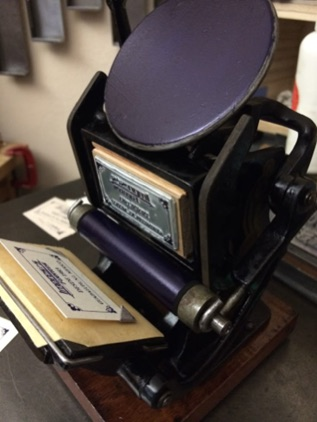
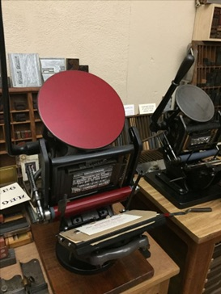
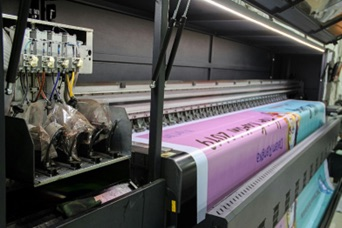
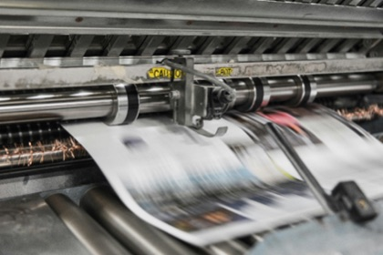

"성수동 인쇄거리는 단순한 제조업 보존이 아니라,
전통 인쇄산업과 창작 산업을 연결하여 새로운 문화거리로 재생하는 것을 목표로 한다."
기존 인쇄산업의 생산기능이 활발히 유지되고 있음에도 불구하고, 가로변에서 시민들이 이를 직관적으로 체감하고 참여할 수 있는 장소 정체성이 부족한 상황이다. 이에 현재의 우수한 인쇄 생산 인프라를 전면 파괴하지 않고 유지하면서, 시민참여형 체험·창작·협업 인프라와 문화 콘텐츠를 유기적으로 결합한 새로운 준공업지역 가로 모델을 제안한다.
CORE STRATEGY
3가지 핵심 전략
체험거리 활성화
제조공간을 시민과 연결하여 인쇄산업을 직접 경험할 수 있도록 구성한다. 엽서, 포스터 제작, 굿즈 커스터마이징 등 참여형 프로그램을 통해 산업공간이 시민의 일상과 만나는 접점을 만든다.
창작 네트워크 구축
기존 인쇄업체와 디자이너, 브랜드, 스타트업 간 협업 시스템을 구축한다. 단순 수주관계를 넘어 공동제작, 기획이 가능한 구조를 만들어 인쇄산업의 새로운 수요를 창출한다.
거리 브랜딩 강화
인쇄 산업 정체성을 거리 디자인 요소로 시각화한다. 인쇄 모티프 바닥 디자인과 같은 물리적 공간 구성을 통해 성수동 인쇄문화거리만의 고유한 장소 정체성을 형성한다.
SPACE STRATEGY
공간별 가로 전략

SPOT 01 / HISTORICAL
성수 인쇄 역사 공간
성수동 인쇄산업의 역사와 기술 변천을 전시한다. 활판, 오프셋부터 디지털 인쇄까지의 흐름을 시각화하여 방문자가 이 거리의 맥락을 깊이 있게 이해할 수 있는 핵심 출발 거점이 된다.

SPOT 02 / EXPERENTIAL
체험 공간
엽서, 포스터 직접 제작 및 굿즈 커스터마이징 프로그램을 운영한다. 기존 인쇄업체의 유휴 장비와 내부 공간을 링크하여 시민이 실제 인쇄 공정을 라이브로 경험할 수 있도록 유도하며, 생산 인프라를 보존하는 동시에 새로운 가로 활성화 유동 인구를 만드는 주축이 된다.

SPOT 03 / CO-WORKING
창작 협업 공간
디자인 스튜디오, 팝업 전시 공간, 브랜드 협업 제작실, 공동 작업 공간으로 구성한다. 인쇄 마스터 엔지니어와 청년 창작자가 동일 가로 구역 안에서 기획 마케팅부터 최종 물질적 프린팅 구현까지 원스톱으로 공생할 수 있는 네트워크 생태계를 구축한다.

SPOT 04 / COMMUNITY
커뮤니티 시설 공간
지역 주민, 기존 인쇄업 종사 소상공인, 그리고 외부에서 유입된 다학제적 창작자가 경계 없이 교류하는 복합 소통 거점 공간이다. 가로 네트워크의 영속성을 뒷받침하는 거버넌스 기반이 된다.
STAMP TOUR & MAPS
스탬프 투어 및 공간 배치 구상
각 설계 거점 지점을 엮는 보행 가로 스탬프 투어 경로 및 다이어그램 배치 예정 구역입니다.
EXPECTED EFFECTS
프로젝트의 기대효과
산업적 측면
전통 인쇄산업의 생산 기반을 유지하면서 새로운 수요 창출 가능. 특히 대형 인쇄 플랫폼인 레드 프린팅과 골목길 기존 인쇄업체를 중심으로 창작자 협업 네트워크가 크게 형성되며 전통 제조업의 영속적 지속가능성을 도출한다.
경제적 측면
체험형 크리에이티브 프로그램 운영과 유니크한 가로 브랜딩 맞춤형 굿즈 소비를 활성화하여, 단순 통과 통로였던 골목 가로에 체류형 경제 활성화 효과를 부여한다.
문화적 측면
소외되어 있던 성수동 북측 인쇄 단지 고유의 산업유산 자산을 문화 텍스처로 전환한다. 단순 기계 가공 공장에서 탈바꿈하여 트렌디한 시각 문화 콘텐츠 메카로 가로 브랜드 정체성을 강화한다.
도시재생 측면
전면 철거형 대규모 전면 개발 방식에서 벗어나, 기존 도시 조직의 물리적 구조(공개공지, 필로티, 가로 표면) 내에서 최소 개입을 통해 단절을 치유하는 보행 중심 가로 재생의 표준 모델을 제시한다.
INSPIRATION MOODBOARD
디자인 모티프 및 레퍼런스
프로젝트가 구상하는 가로 디자인 질감, 그래픽 노면 스티커 브랜딩, 그리고 독창적인 커스텀 소품 연출의 영감 무드보드입니다.